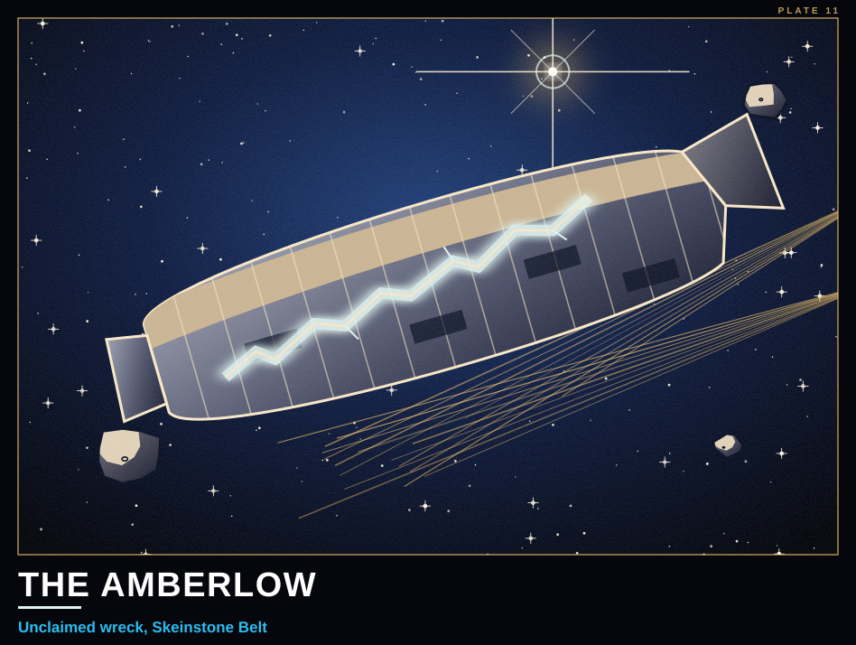

Ironveil Concordat · Registry Hub · Bellwood Relay
Registry relay · hub edition
The Ferrylight Dispatch
Recorded, and therefore safe.
BELLWOOD RELAY EDITION • BELLWOOD SYSTEM • LEEWARD SOUTH APPROACH · Signal normal

Licensed work
Hand Wanted — Auberry Farmstead (community board, unverified)25 marks/personFencing and hauling for harvest week, three days, meals included. Ask for J. Auberry at the market stall. Survey staff need not apply. Time: 24 hrs.
Pump Repair — Irrigation Line (Penhallow Pump Works)30 marks/personAn engineer's hands wanted. Parts on site. Time: 4 hrs.
Gulper Clearance — Sallow Fen (Reed-cutters' Hall)35 marks/personClear the cutters' channels of gulpers. Bring boots. The Hall pays extra for the big one. Time: 6 hrs.
Survey Assistant — Bellwood Resonance Survey (Registry licensed)30 marks/personCarry instruments, hold a lamp, sign the Registry ledger. Applicants are recorded. Time: 8 hrs.
Licensed work is vetted by the Registry. Community board items are not.
Registry-approved vendor
Penhallow Pump WorksRegistry-certified seals and fittings for irrigation and stock pumps. Leeward South, middle row.
Port schedule
Leeward South Spaceport: one field, repair bay open dawn to dusk. Hull work paid in advance.
Concordat survey shuttle on the field until further notice. Keep clear of the survey cordon at the Auberry holding.
Fewer listings than last cycle.
Public record
Registry Confirms Bellwood–Belt CorrelationThe Registry has confirmed that the resonance event at a Halyard farmstead and the white flash at the Skeinstone Belt derelict listed as the Amberlow occurred within the same hour. The Registry classifies the Belt event as an uncontrolled discharge of Array-era equipment. A small craft seen leaving the derelict is sought for interview. Its operators are not presently accused of any offense.
Bellwood Resonance Survey Continues Under LicenseChief Engineer H. Tresk's survey of the affected farmstead continues under Registry license. A cordon is in place at the Auberry holding. Residents with information may contact the survey at the landing field. Compensation is offered for cooperation.
Reminder: Ward-Lamp Coverage at Leeward SouthHalyard has one Registry ward-lamp, at the landing field. Casting within its range is recorded. Report unlicensed casting to the survey.
Harvest Week Supper at the Harvest Hall (community board, unverified)Last night of harvest week. Bring a dish. All crews welcome.
Seed Buyer Seeks Fallow Parcels (community board, unverified)A buyer staying at the Hollow Oak pays fair coin for unworked land and old title papers. Discretion assured. Ask for Mr. Slate.
Carried by the Ironveil Concordat Registry Hub, Bellwood Relay. This connection is logged under the Registry Charter. Licensed listings are vetted; items marked community board are not. Report unlicensed casting to your nearest warden.